BUGS Graphics
General properties
All BUGS graphics have a set of basic properties that can be modified using the
Plot Properties window. This is opened as follows: first, focus the relevant plot by left-clicking on it; then select
Object Properties... from the
Edit menu. Alternatively, right-clicking on a focused plot will reveal a pop-up menu from which
Properties... may equivalently be selected. The
Plot Properties window comprises a "tab-view" and two command buttons, namely
Apply and
Data.... The tab-view contains five tabs that allow the user to make different types of modification - these are discussed below. The
Apply command button applies the properties displayed in the currently selected tab to the focused plot. And
Data... opens a separate window with the raw data values used to plot the figure in the chosen plot. The other properties of the plot that user can edit are discussed
below.
Margins
The
Margins tab displays the plot's left, right, top and bottom margins in millimetres (mm). The left and bottom margins are used for drawing the y- and x-axes respectively. The top margin provides room for the plot's title and the right margin is typically used for plots that require a legend. (Note that top margins (and hence titles) are always inside the plotting rectangle, i.e. there is no gap between the plotting rectangle and the top edge of the graphic.)
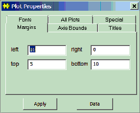
In cases where it is appropriate to alter a plot's margins the user may enter his/her preferred values and click on
Apply to effect the desired change. If the specified values are not appropriate, e.g. if left + right is greater than the width of the graphic (which would result in a plotting rectangle of negative width) or if any margin is negative, etc., then either nothing will happen and the
Margins tab will reset itself or some form of compromise will be made.
Axis Bounds
The user may specify new minimum and maximum values for either or both axes using the
Axis Bounds tab (followed by the
Apply button).
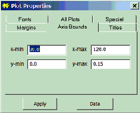
Note that the resulting minima and maxima may not be exactly the same as the values specified because BUGS always tries to ensure that axes range between 'nice' numbers and also have a sufficient number of tick marks. Note also that if max < min is specified then BUGS will ignore it and the
Axis Bounds tab will reset itself, but there is no guard against specifying a range that does not coincide with the data being plotted, and so the contents of the plot may disappear!
(Some types of plot, such as trace plots, do not allow the user to change their axis bounds, because it would be inappropriate to do so.)
Titles
The
Titles tab should be self-explanatory.
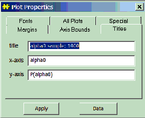
Note, however, that because BUGS does not (yet) support vertical text, a substantial amount of space may be required in the left margin in order to write the y-axis title horizontally - if sufficient space is not available then the y-axis title may not appear at all (clearly, this can be rectified by increasing the left margin).
All Plots
The idea behind the
All Plots tab is to allow the user to apply some or all of the properties of the focused plot to all plots of the same type (as the focused plot) in the same window (as the focused plot).
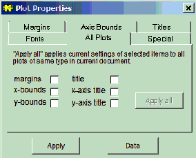
The user should first configure the focused plot in the desired way and then decide which of the plot's various properties are to be applied to all plots (of the same type, in the same window). The user should then check all relevant check-boxes and click on
Apply all. Be careful! It is easy to make mistakes here and there is no undo option - the best advice for users who go wrong is to reproduce the relevant graphics window via the
Sample Monitor Tool or the
Comparison Tool.Fonts
The
Fonts tab allows the user to change the font of the plot's title, its axes, and any other text that may be present.
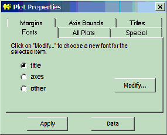
First select the font to be modified and click on
Modify.... (Note that it will only be possible to select
other if the focused plot has a third font, i.e. if text other than the title and axes is present on the plot, e.g. the labels on a box plot - see
Compare...) The self-explanatory
Font dialogue box should appear - select the required font and click on
OK (or
Cancel).
In order to apply the same font to an arbitrarily large group of plots (not necessarily of the same type), rather than using the
All Plots tab, BUGS uses a "drag-and-pick" facility. First focus a single plot and select which font is to be modified for the whole group:
title,
axes, or
other (if available). Now highlight the group of plots using the mouse. Hold down the ALT key and then the left-hand mouse button and drag the mouse over an area of text with the desired font; then release the mouse button and the ALT key in turn, and the required changes should be made. As an alternative to dragging the mouse over a piece of text with the desired font, the user may instead drag over another plot (even one in the group to be modified) - the group will adopt that plot's properties for the selected font on the
Fonts tab.
Specific properties (via Special)
Below we describe the special property editors that are available for certain types of plot. These allow user-interaction beyond that afforded by the standard tabs of the
Plot Properties dialogue box and are accessed via its
Special tab.
Density plot
When the
density button on the
Sample Monitor Tool window is pressed, the output depends on whether the specified variable is discrete or continuous - if the variable is discrete then a histogram is produced whereas if it is continuous a kernel density estimate is produced instead. The specialized property editor that appears when
Special tab on the
Plot Properties dialogue box is selected also differs slightly depending on the nature of the specified variable. In both cases the editor comprises a numeric field and two command buttons (
apply and
apply all) but in the case of a histogram the numeric field corresponds to the "bin-size" whereas for kernel density estimates it is the smoothing parameter* (see below):
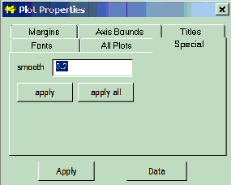
Property editor for histogram
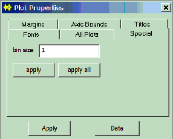
Property editor for kernel density estimateIn either case, the
apply button sets the bin-size or smoothing parameter of the focused plot to the value currently displayed in the numeric field. The
apply all button, on the other hand, applies the value currently displayed in the numeric field to
all plots of the same type (as the focused plot) in the same window (as the focused plot).
Note*: We define the smoothing parameter for kernel density estimates,
s, via the definition of bandwidth. Suppose our posterior sample comprises
m realisations of variable
z - denote these by
zi,
i = 1,...,
m:
band-width =
V1/2 /
ms ;
V =
m-1Sizi2 - (
m-1Sizi)
2where the summations are from
i = 1 to
i =
m. The default setting for
s is 0.2.
Box plot
The
Special tab of the box plot property editor, is described below:
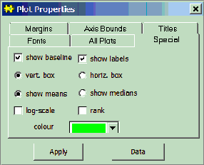
show baseline: this check-box should be used to specify whether or not a baseline should be shown on the plot.
show labels: check-box that determines whether or not each distribution/box should be labeled with its index in
node (that is
node on the
Comparison Tool). The default setting is that labels should be shown.
show means or
show medians: these radio buttons specify whether the solid black line at the approximate centre of each box is to represent the posterior mean or the posterior median - mean is the default.
rank: use this check-box to specify whether the distributions should be ranked and plotted in order. The basis for ranking is either the posterior mean or the posterior median, depending on which is chosen to be displayed in the plot (via
show means or
show medians).
vert. box or
horiz. box: these radio buttons determine the orientation of the plot. The default is "vertical boxes", which means that the scale axis (i.e. that which measures the 'width' of the distributions) is the y-axis.
log-scale: the scale axis can be given a logarithmic scale by checking this check-box.
Finally, at the bottom there is a colour field for selecting the fill-colour of the displayed boxes.
Caterpillar plot
The
Special tab of the caterpillar plot property editor is virtually identical to that of the box plot property editor except that there is no fill-colour field on the former:
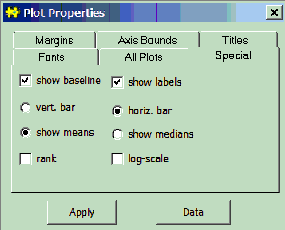
Density strips
The
Special tab for density strips reveals several ways to customise these plots.
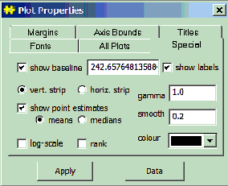
show baseline: specify whether or not a baseline should be shown on the plot. The numeric field to the immediate right of the check-box gives the value of that baseline. By default, a baseline equal to the global mean of the posterior means is shown.
show labels: check-box that determines whether or not each strip should be labelled with its index in
node (that is
node on the
Comparison Tool). The default setting is that labels should be shown.
vert. strip or
horiz. strip: plot vertically or horizontally-aligned strips.
show point estimates: determines whether a point estimate is shown by tick marks on each strip. If this is selected, the definition of the point estimate is defined by the choice of
mean or
median. The estimates are shown as white lines by default, since the density is usually high, thus the strip is dark, at the posterior mean or median. But if the density is less than 0.2 of the maximum density, then the estimates are shown as black lines on a light strip background.
log scale: display the scale axis on a logarithmic scale.
rank: plot the distributions in the order of their posterior means or medians, depending on the selection in the
mean or
median radio button.
show 50% interval: select to display the 25% and 75% sample quantiles as tick marks on each strip.
show 95% interval: select to display the 2.5% and 97.5% sample quantiles as tick marks on each strip.
gamma: "gamma correction"
γ for the variation in shading.
γ is a real number greater than 0. The shading at a point
xiwith density
diis defined as a mixture of the colour at the maximum density (black by default) and white, in proportions
p = (di / maxi( di ))γand
1 - p respectively. By default,
γ = 1, so that the perceived darkness is proportional to the density.
smooth: the smoothing parameter
σ for the density estimate, as described under
Density plot. This is a value between 0 and 1, with smaller values producing smoother estimates.
If the data are discrete, then the bin size for the histogram is defined by the closest integer to the band-width implied by the supplied value of
σ, or 1 if this is greater. Smaller
σ give greater bin sizes, up to a maximum bin size equal to the closest integer to the standard deviation of the sample. Values of
σ closer to 1 give smaller bin sizes, up to a minimum bin size of 1, or of the closest integer to the standard deviation divided by the sample size if this is greater.
To update the plot after typing in a new smoothing parameter, click
Apply. The plot does not update automatically, since recalculating the density may be slow for large samples.
Colour: In the right-hand side of the dialog there is a colour field for selecting the colour at the point of maximum density. The colours for the rest of the strip are defined by interpolating between this colour and white, which represents zero density, so that the darkness of the strip increases with the density.
Model fit plot
In cases where an axis is defined on a strictly positive range, it may be given a logarithmic scale by checking the appropriate check-box:
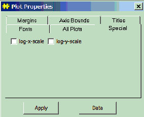
Scatterplot
With a scatterplot focused, select the
Special tab on the
Plot Properties dialogue box to obtain the following property editor:
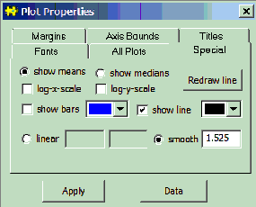
show means or
show medians: these radio buttons determine whether it is the posterior means or medians of
node that are plotted/scattered against
axis to form the plot (that is
node and
axis on the
Comparison Tool) - the default is means.
Immediately beneath the
show means or
show medians radio buttons is a colour field for selecting the colour of the scattered points.
log-x-/log-y-scale: either or both axes may be given a logarithmic scale (assuming they are defined on strictly positive ranges) by checking the appropriate check-box(es).
show bars: 95 per cent posterior intervals (2.5% - 97.5%) for
node will be shown on the plot (as vertical bars) if this box is checked.
show line: use this check-box to specify whether or not a reference line (either a straight line specified via its intercept and gradient or an exponentially weighted smoother - see below) is to be displayed.
To the immediate right of the
show line check-box is a colour field that determines the reference line's colour (if displayed).
linear or
smooth: these radio buttons are used to specify whether the reference line (if it is to be displayed) should be linear or whether an exponentially weighted smoother should be fitted instead. In the case where a linear line is required, its intercept and gradient should be entered in the two numeric fields to the right of the
linear radio button (in that order). If a smoother is required instead, then the desired degree of smoothing* (see below) should be entered in the numeric field to the right of the
smooth radio button. To save unnecessary redrawing of the plot as the various numeric parameters are changed, the
Redraw line command button is used to inform BUGS when all alterations to the parameters have been completed.
Note*: The exponentially weighted smoother that BUGS uses on scatterplots is defined as:
s
i =
Sjw
ijy
j /
Sjw
ij i = 1,..., n
where n is the number of scattered points and the summations are from j = 1 to j = n. The weights w
ij are given by
w
ij = exp(-|x
i - x
j | / s )
where s is the smoothing parameter defined in the
Scatterplot properties dialogue box (next to the
smooth radio button). The default setting for s is (somewhat arbitrarily) {max(x) - min(x)} / 20.